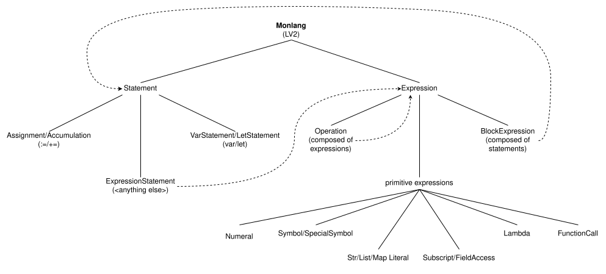

PROGRAM := PROGRAM-SENTENCE*
---
PROGRAM-SENTENCE := <indentation> (PROGRAM-WORD (SPACE PROGRAM-WORD)*)? NEWLINE
TERM := WORD (SPACE WORD)*
---
PROGRAM-WORD = WORD
WORD := ASSOCIATION
| PATH
| POSTFIX-PARENTHESES-GROUP | POSTFIX-SQUARE-BRACKETS-GROUP
| CURLY-BRACKETS-GROUP | PARENTHESES-GROUP | SQUARE-BRACKETS-GROUP
| MULTILINE-SQUARE-BRACKETS-GROUP
| QUOTATION
| ATOM
---
ASSOCIATION := {WORD - ASSOCIATION} ':' WORD
POSTFIX-PARENTHESES-GROUP := {WORD - ASSOCIATION} PARENTHESES-GROUP
POSTFIX-SQUARE-BRACKETS-GROUP := {WORD - ASSOCIATION} SQUARE-BRACKETS-GROUP '!'|'?'|''
PATH := {WORD - ASSOCIATION} '.' ATOM
CURLY-BRACKETS-GROUP := ('{' TERM? '}')
| ('{' NEWLINE PROGRAM-SENTENCE+ <indentation> '}')
PARENTHESES-GROUP := '(' (TERM (',' SPACE TERM)*)? ')'
SQUARE-BRACKETS-GROUP := '[' (TERM (',' SPACE TERM)*)? ']'
MULTILINE-SQUARE-BRACKETS-GROUP := '[' NEWLINE PROGRAM-SENTENCE+ <indentation> ']'
QUOTATION := ('"' QUOTED-LINE? '"')
| ('```' (NEWLINE (<indentation> QUOTED-LINE?)?)+ NEWLINE <indentation> '```')
ATOM -- fall-through
Program (Program) Statement (ProgramSentence) Expression (Term) --- Statements Assignment (ProgramSentence<Word := Term>) Accumulation (ProgramSentence<Word += Term>) VarStatement (ProgramSentence<var Atom Term>) LetStatement (ProgramSentence<let Atom Word>) ExpressionStatement (ProgramSentence) --- Expressions Operation (Term<Word Word Word+>) BlockExpression (CBG) Numeral (Atom<[0-9]+>) SpecialSymbol (Atom<$.*>) Symbol (Atom<.+>) StrLiteral (Quotation) ListLiteral (SBG<Term*>) MapLiteral (SBG<Assoc<Word,Word>*>) FunctionCall (PPG<Term*>) Subscript (PSBG<Term>) Lambda (Assoc<PG<Atom<.+>*>,CBG>)

">ideas from SICP :
- closures can be used to implement objects
- loops = if..else + recursive tail call elimination
-> _ := loop()
- normal order evaluation can be used to implement
if..else statements
-> &&(), ||(), tern(), !tern(), CaseAnalysis()
That way, a program in that language
is only composed of expressions and
binding of symbols to expressions in an environment.
Table of Contents